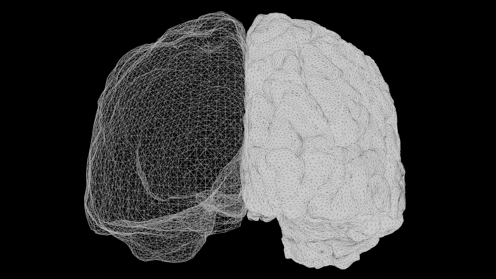

Alejandro Montenegro Taborda

Decodificando el tiempo: Cómo el cerebro separa el "cuándo" del "qué"
Cuando una persona afirma "caminé" en lugar de "camino", el cerebro humano realiza un cálculo algorítmico asombroso en cuestión de milisegundos. No solo procesa el concepto semántico de la acción motora, sino que extrae una etiqueta temporal incrustada en la estructura misma de la palabra. A este fenómeno se le conoce en lingüística como morfología flexiva: la capacidad de alterar la forma de una palabra para añadir información gramatical sin cambiar su significado base.
Desde la lingüística descriptiva, se comprende que el idioma inglés no posee un tiempo futuro a nivel morfológico; el futuro se construye sintácticamente agrupando palabras (por ejemplo, añadiendo el auxiliar "will"). Por consiguiente, la dicotomía temporal real a nivel de la estructura de la palabra en inglés se reduce estrictamente a dos categorías: Pasado frente a No-Pasado. Partiendo de esta premisa, la presente investigación de maestría se planteó un interrogante fundamental: ¿Existen áreas en la corteza cerebral dedicadas exclusivamente a procesar el tiempo gramatical, independientemente del significado de la palabra y del sonido que la compone?
El paradigma naturalista y el Voxelwise Modeling
Históricamente, la neurociencia del lenguaje dependía de diseños experimentales altamente artificiales, en los cuales se le pedía a un sujeto leer oraciones aisladas y repetitivas dentro de un escáner de resonancia magnética funcional (fMRI). Sin embargo, el cerebro humano evolucionó para decodificar lenguaje en contextos ricos, dinámicos y continuos.
Para resolver esta limitación, se implementó un marco computacional de vanguardia conocido como Voxelwise Modeling (Modelado Vóxel por Vóxel). En lugar de buscar una única "área del lenguaje", este enfoque expone a los participantes a estímulos naturalistas —como escuchar horas de narrativas en un podcast— y construye un modelo matemático predictivo para cada uno de los miles de vóxeles (píxeles tridimensionales) que componen el cerebro. La gran ventaja de este método es su validez ecológica: permite observar cómo interactúan redes cerebrales complejas en situaciones de la vida real. No obstante, su principal desventaja radica en el inmenso costo computacional que exige y en la dificultad para separar las múltiples variables que ocurren simultáneamente en un relato natural.
Inteligencia Artificial para aislar la señal
El mayor peligro metodológico al estudiar el tiempo verbal en el cerebro es la colinealidad. Si el cerebro se activa al escuchar la palabra "caminé", es imperativo demostrar matemáticamente que esa activación responde al tiempo pasado y no simplemente al hecho de que el verbo termina en un sonido explosivo (/d/ o /t/), o al significado conceptual de la acción.
Para extraer la categoría gramatical de los datos de audio, se utilizaron arquitecturas de Inteligencia Artificial conocidas como Transformers. A diferencia de los diccionarios tradicionales, los Transformers analizan el contexto completo de una oración, permitiendo diferenciar un sustantivo de un verbo incluso cuando la palabra es idéntica, asignando etiquetas morfológicas precisas de "Pasado" o "No-Pasado" con un nivel de exactitud equiparable al humano.
Posteriormente, para aislar esta señal morfológica, se diseñaron controles matemáticos rigurosos. En primer lugar, se aplicó un control acústico de densidad fonética que cuantifica cuántos sonidos ingresan al oído por segundo, evitando que la corteza auditiva primaria confunda un sufijo gramatical con simple ruido físico. En segundo lugar, se implementó un control de carga cognitiva para medir el volumen total del habla. Finalmente, se integró un control semántico masivo (denominado English1000sm), el cual modela el significado abstracto de las historias, asegurando así que la representación conceptual de las palabras no se mezcle con su estructura gramatical.
La técnica de Partición de Varianza
Con todos estos datos preparados, se utilizó una técnica estadística avanzada conocida como Partición de Varianza (Variance Partitioning). En términos sencillos, esta técnica funciona como un ingeniero de sonido que intenta aislar el volumen de una flauta dentro de una grabación de orquesta completa. Primero, se entrena un algoritmo masivo (Regresión Ridge Penalizada) utilizando todas las variables disponibles: acústica, significado y gramática. Luego, se entrena un segundo modelo al cual se le oculta deliberadamente la información gramatical. Al restar la precisión predictiva del segundo modelo al primero, el residuo resultante es la Varianza Única: el porcentaje de actividad cerebral que única y exclusivamente se puede explicar por el tiempo gramatical.
Como señala el equipo de investigación en la formulación del diseño experimental:
"This is done by comparing responses across repeats of the test story, task-wheretheressmoke." (LeBel et al., 2023).
De este modo, esta historia narrativa específica se estableció obligatoriamente como el estándar estricto de evaluación en todos los análisis.
Computación en la nube y permutaciones empíricas
Procesar matrices matemáticas que cruzan casi 100.000 vóxeles cerebrales con miles de variables retrasadas en el tiempo genera un estrés computacional extremo. Por esta razón, el modelado requirió el aprovisionamiento de infraestructura de alto rendimiento en Google Cloud Platform, utilizando máquinas virtuales con 128 GB de memoria RAM.
Para asegurar que los hallazgos no fuesen producto del azar estadístico, se ejecutaron 3000 iteraciones de permutación empírica. Este riguroso proceso consiste en desordenar aleatoriamente los datos de tiempo miles de veces para crear distribuciones nulas de control, garantizando, mediante correcciones de Tasa de Falsos Descubrimientos (FDR), que la activación reportada es biológicamente genuina.
Resultados cuantitativos y hallazgos neurobiológicos
Los datos revelaron una sintonía morfológica robusta a lo largo de 8 participantes (un noveno sujeto fue excluido bajo criterios matemáticos estrictos tras detectarse una singularidad matricial originaria del escáner). A continuación, se presenta la tabla descriptiva que ilustra la cantidad de vóxeles que superaron los filtros estadísticos y la varianza única máxima encontrada en cada corteza.
| Participante | Vóxeles significativos | Porcentaje de corteza cerebral | Varianza Única Pico (R²) |
|---|---|---|---|
| UTS01 | 822 | 1.01 % | 2.16 % |
| UTS02 | 938 | 1.00 % | 1.48 % |
| UTS03 | 1,482 | 1.55 % | 3.73 % |
| UTS05 | 955 | 0.96 % | 2.88 % |
| UTS06 | 1,018 | 1.10 % | 1.72 % |
| UTS07 | 981 | 1.04 % | 2.09 % |
| UTS08 | 736 | 0.76 % | 1.52 % |
| UTS09 | 953 | 0.97 % | 0.68 % |
En la neuroimagen funcional, dadas las inmensas proporciones de ruido sistémico y fisiológico, lograr aislar proporciones de varianza única de hasta el 3.73 % a partir de tan solo dos dimensiones morfológicas constituye una evidencia biológica excepcionalmente sólida.
A nivel topográfico, se observó que la máxima especialización no se restringe al histórico Giro Frontal Inferior (conocido como el Área de Broca). Por el contrario, los picos de activación se extendieron de forma consistente hacia el Giro Temporal Superior posterior y la Unión Temporoparietal (pSTS/TPJ). Estas áreas actúan como la verdadera interfaz fonológico-léxica, lo cual sugiere que, durante la comprensión del lenguaje continuo, la decodificación de la información gramatical del tiempo se da en redes corticales ampliamente distribuidas que separan eficazmente el "cuándo" de la semántica general del mensaje.
Interactúa con los modelos tridimensionales
A continuación, se ofrecen los accesos a los mapas bidimensionales construidos mediante la librería Pycortex.
Rasgos Articulatorios] LEX[lexical_features
Tasa de Palabras] SYN[syntactic_features
Complejidad de Dependencias] SEM[semantic_features
english1000 completo] MOR[morphological_features
Finitud: Pasado vs No-Pasado] end STIM e1@--> PHO STIM e2@--> LEX STIM e3@--> SYN STIM e4@--> SEM STIM e5@--> MOR subgraph Modeling [2. Partición de Varianza y Modelado] direction TB NUIS[Matriz de Control Nuisance
Phono + Lex + Synt + Sem] FULL[Matriz de Modelo Completo
Nuisance + Morph] RIDGE[Banded Ridge Regression
MultipleKernelRidgeCV] end PHO e6@--> NUIS LEX e7@--> NUIS SYN e8@--> NUIS SEM e9@--> NUIS MOR e10@--> FULL NUIS e11@--> FULL NUIS e12@--> RIDGE FULL e13@--> RIDGE subgraph Validation [3. Inferencia Estadística y Resultados] direction TB VAR[Cálculo de Varianza Única
R² Completo - R² Control] PERM[Distribuciones Nulas Empíricas
Shift Testing + FDR] MAPS([Mapas Corticales de Sintonía Morfológica]) end RIDGE e14@--> VAR VAR e15@--> PERM PERM e16@--> MAPS %% Animaciones Rápidas de Flujo e1@{ animation: fast } e2@{ animation: fast } e3@{ animation: fast } e4@{ animation: fast } e5@{ animation: fast } e6@{ animation: fast } e7@{ animation: fast } e8@{ animation: fast } e9@{ animation: fast } e10@{ animation: fast } e11@{ animation: fast } e12@{ animation: fast } e13@{ animation: fast } e14@{ animation: fast } e15@{ animation: fast } e16@{ animation: fast }
Ramas iniciales: El estímulo narrativo se divide matemáticamente en tus cuatro espacios
de
características respetando las subdisciplinas lingüísticas y acústicas.
ColumnKernelizer: El embudo crítico donde le dices a Python "estas matrices son
distintas,
trátalas con regularizaciones independientes".
Banded Ridge & Partición: El corazón de la evaluación, donde mides el modelo completo
(Full) y
le restas el modelo de control (Nuisance).
Final: La evaluación estadística que determinará si se ilumina la corteza o si se aprueba
la
hipótesis nula.
Plan de Optimización en Voxelwise Encoding
Basado en los estándares del estado del arte para 2026 en Voxelwise Encoding, aquí tienes tu Hoja de Ruta Metodológica. Guárdala y úsala como checklist para tus próximas iteraciones de código.
ITERACIÓN 1: Refinamiento de los Espacios de Características (Feature Spaces)
1. Control de Categoría Léxica (¡Urgente!)
- Problema actual: Solo cuentas past_count y non_past_count. Si le restas solo el word_rate (tasa de palabras), tu varianza única está mezclando "el tiempo verbal" con "el hecho de ser un verbo" frente a sustantivos o adjetivos.
- Acción: En tu pipeline de NLP (Celda 3), añade una variable verb_count (o verb_rate).
- Objetivo: El modelo nuisance (de control) debe saber cuándo hay un verbo. Así, la varianza de la morfología (Pasado/No-Pasado) será puramente el efecto del tiempo gramatical, no de la categoría léxica.
2. Mejora del Filtro Acústico
- Problema actual: Usar solo phone_rate (conteo de fonemas) es un control acústico muy débil para una revista de alto impacto.
- Acción: Como mencionaste, implementa la extracción de un espectrograma Mel (o al menos características espectrales básicas / densidad de consonantes). Tendrás que alinear este espectrograma a la frecuencia de muestreo de tu TR (TR = 2.0s) usando una ventana de convolución temporal (HRF) o delays FIR.
ITERACIÓN 2: Arquitectura del Modelo (El salto al Banded Ridge)
3. Abandonar el RidgeCV estándar
- Problema actual: Al usar np.hstack para unir Acústica, Semántica y Morfología bajo un solo RidgeCV, el hiperparámetro de penalización (alpha) "aplasta" tu señal morfológica (que es un vector ralo de conteos) favoreciendo a la semántica (que es densa).
- Acción: Implementa Banded Ridge Regression. Ya importaste MultipleKernelRidgeCV y ColumnKernelizer de himalaya en tu Celda 1. ¡Úsalos!
- Implementación: Configura el ColumnKernelizer para agrupar tus datos:
- Bloque 1: Acústico (Mel / Phone rate)
- Bloque 2: Léxico (word_rate + verb_count)
- Bloque 3: Semántico (Embeddings de Google)
- Bloque 4: Morfológico (past vs non_past)
4. Resolver el dilema del PCA Semántico
- Acción a evaluar: Ahora que usarás Banded Ridge (que maneja miles de dimensiones sin problema de RAM), haz la prueba empírica: ¿qué pasa si pasas el embedding crudo de 985 dimensiones en lugar del PCA de 50?
- Decisión: Si el embedding crudo sigue absorbiendo el tiempo verbal (fuga semántico-sintáctica), mantén tu PCA y justifícalo formalmente como "mitigación de colinealidad representacional". Si el Banded Ridge logra separar las señales sin ayuda del PCA, quita el PCA. (Esto es hacer ciencia exploratoria de verdad).
ITERACIÓN 3: Inferencia Estadística y Partición de Varianza
5. Ajuste del Variance Partitioning
- Modelo Nuisance: Deberá entrenarse con Acústica + Léxico + Semántica.
- Modelo Completo: Deberá entrenarse con Acústica + Léxico + Semántica + Morfología.
- Acción: La Varianza Única será R2_Full - R2_Nuisance. Asegúrate de que este cálculo se haga sobre un conjunto de prueba (Test Story) estrictamente separado, tal cual lo tienes programado ahora.
6. Validar las Permutaciones Cíclicas
- Acción: Tu lógica actual de hacer un np.roll() (shift cíclico) en el test set para generar las distribuciones nulas es muy inteligente para ahorrar poder de cómputo. Mantén esto, pero asegúrate de que el np.roll() solo altere el bloque Morfológico, rompiendo su alineación con el cerebro, mientras los espacios nuisance permanecen estables. Así validas si el R² único es producto del azar o de una verdadera sintonía temporal.
Resumen para tu "To-Do List":
- [ ] Añadir verb_count al NLP.
- [ ] Reemplazar/Aumentar phone_rate por un Espectrograma Mel.
- [ ] Reemplazar RidgeCV por MultipleKernelRidgeCV (Banded Ridge).
- [ ] Configurar ColumnKernelizer para separar los bloques de variables.
- [ ] Probar Empíricamente: Semántica cruda vs. PCA de 50 componentes bajo el nuevo Banded Ridge.
- [ ] Mantener el shift cíclico de permutaciones para el cálculo del valor-p (FDR < 0.05).
Agradecimientos institucional
Agradecimiento Institucional al Gallant Lab por el desarrollo de los marcos de Voxelwise Modeling, la publicación de sus herramientas de código abierto (Himalaya y Pycortex) y la invaluable democratización del conocimiento.
—
Redacción por Alejandro Montenegro Taborda
(Asistida por Inteligencia Artificial Generativa)